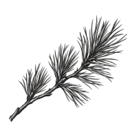

Западный пляж у Зеленоградска-2
За западными кварталами город раскрывается широким песчаным берегом. Здесь можно остаться у воды, а потом вернуться к электричке тем же путём.

Маршруты БалтикиБалтика — это маршрут.Свет на сайте
Сегодня · Калининград
В режиме «Авто» свет меняется вместе с солнцем.
Начало астрономической ночи для этих суток не рассчитано.
Спланировать вечерБраузер не сохранил выбор. На этой странице режим работает.
Балтийский
характер
рядом
Зеленоградск · Транспорт
Остановка на западной стороне Зеленоградска. Летом сюда приходит «Морской экспресс», а широкий морской берег остаётся совсем рядом: ТИЦ указывает около 600 метров от платформы.
В вашей прогулке
Для дня на западном пляже смотрите рейсы до Зеленоградска-2. К пляжу ведёт наша пешая прогулка с возвращением к этой же станции. Данные о «Морском экспрессе» подтверждены для сезона 2026; лето 2027 проверим по новому расписанию.
Станция Зеленоградск-2
Расстояния по прямой. Путь по улицам и тропам проверяйте на карте.
Соседние точки
Ближайшие места в этом районе. Расстояния по прямой; путь по улицам и тропам сверяйте на карте.
За западными кварталами город раскрывается широким песчаным берегом. Здесь можно остаться у воды, а потом вернуться к электричке тем же путём.
На западном пляже кафе стоит рядом с деревянным настилом и велосипедами. В снятом меню — скумбрия, судак и уха. Это остановка для длинной прогулки вдоль берега.
Здание «Золотой мили» встречает на пути вдоль улицы Гагарина. Это ресторан при отеле: его можно отметить в поездке, а работу в нужный сезон уточнить отдельно.
Продолжение поездки
Пешком · Зеленоградск · 1,2 км
Небольшой день у моря: от западной станции к широкому пляжу и обратно к поезду. В линии учтены оба пеших подхода, в остановках — полчаса у воды.
Обновлено 3 октября 2026 года. Условия посещения остановок проверьте перед поездкой.